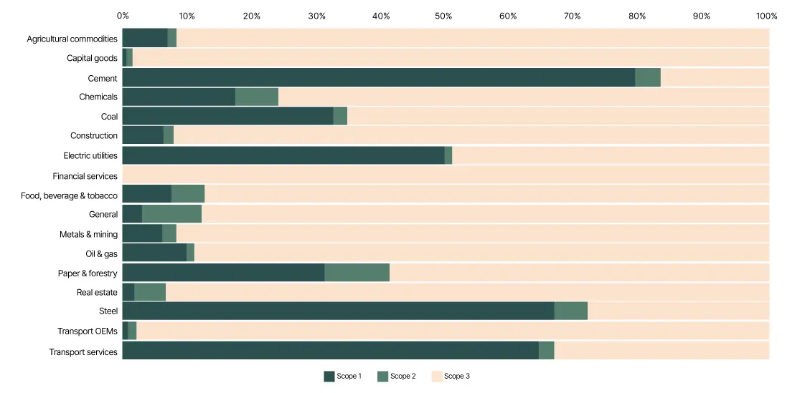
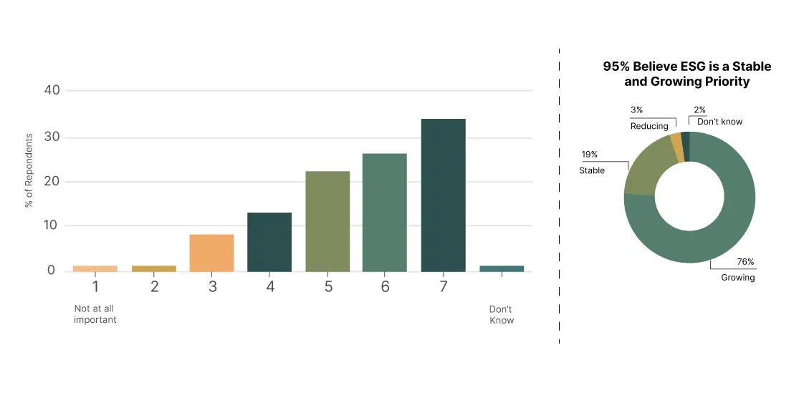
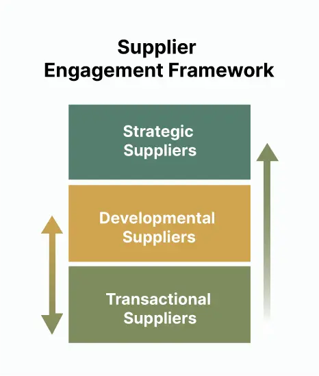

As the net-zero countdown intensifies, companies are realizing that their biggest decarbonization challenge and opportunity lies beyond their own operations. For most organizations, as much as?90%?of total emissions lie outside their direct operations, embedded across supply networks in materials, logistics, and services. The path to achieving net zero therefore runs squarely through the supply chain.

Source: CDP 2023
Procurement sits at the center of climate transformation. Every sourcing decision - what to buy, how to source, and who to partner with - defines a company's environmental footprint as much as cost or quality once did. Yet only a minority of corporate procurement teams have integrated sustainability into their core processes and performance metrics.

Source: GEP Outlook 2025
In a recent industry survey, 4 in 5 procurement leaders said ESG factors are “important”, but fewer than 1 in 3 include them in supplier evaluations.
The growing consensus among industry leaders is clear: green procurement is not just about compliance; it is about competitiveness, cost resilience, brand differentiation, and innovation.
Why Supply Chain Decarbonization Matters
Most companies have quickly adopted corporate net-zero policies; however, many have not progressed past the factory gates. Recent EcoVadis and CDP studies demonstrate the immense financial and strategic value of climate risk management in supply chains:
- The cost of ignoring these risks is nearly three times higher than the investments needed to mitigate them, with potential financial liabilities exceeding $500 billion annually by 2030. This is equivalent to 15-20% of EBIT for S&P 500 firms.
- Only 1 in 4 companies acknowledge climate risks associated with supply chains, making Scope 3 emissions a major blind spot for most companies
- A significant gap remains in addressing value chain emissions - while over 50% of companies have taken steps to reduce their overall emissions, only about 15% extend their efforts to the value chain.
- Companies with low-carbon, transparent supply chains are at an advantage, securing 10-20% higher success rates in sustainability-driven tender processes.
- Proactive management of climate risks and emissions could unlock up to $165 billion in financial opportunities, making decarbonization a critical driver of resilience, innovation, and future growth.
The Reality on Ground: Key Industry Challenges
Despite clear momentum, many companies find progress uneven, constrained by several persistent barriers.
- Data availability and quality: It's hard to get precise, detailed emissions data from suppliers, especially Tier 2 and beyond, due to inconsistent reporting and limited transparency across supplier networks.
- Complexity of measurement: For Scope 3 emissions, companies often must rely on estimates or proxy data, as there are numerous indirect sources across extensive supply chains.
- Lack of standardized methods: There is no single standardized approach for calculating Scope 3 emissions, as it varies with industry and use cases. This leads to inconsistencies and difficulties in cross-company comparisons.
- Re-baselining and methodological issues: Changes in scope, data quality and methodology often lead to frequent recalculations, which impair tracking of progress over time.
- Cost and resource constraints: Many organizations struggle to allocate the resources and investment required for the collection and verification of the data.
- Procurement misalignment: In most companies, low carbon remains a core criterion of less than 25% of procurement decisions.
These challenges underline a fundamental truth: Supply chain decarbonization depends on engagement, collaboration, and credible data, not just targets.
To tackle these problems, a coordinated approach is needed that combines expectations, developing skills, and cross-value-chain trusted data systems.
Turning strategy into action
Companies need to make climate a central pillar of their procurement decisions to make progress. Here is what that looks like in practice:
- Integration of sustainability in procurement decisions: Sustainability should be a part of every purchase decision. RPF's should include emission disclosure requirements, and contracts should commit to specific reduction of targets. Long-term business resilience and value can be created by selecting greener suppliers, even at a marginally higher price.
-
Segment suppliers strategically: Companies can stratify suppliers using a tiered engagement model, whereby the level of collaboration and strategic focus increases as suppliers move through the tiers. This progression is highlighted by the green-yellow arrow in figure 3:
- Transactional suppliers at the base are managed primarily for efficiency and compliance and require minimal engagement.
- Middle-tier developmental suppliers receive greater attention, including two-way communication and joint improvement projects.
- At the top tier, strategic suppliers become close partners with the company in the areas of innovation, decarbonization, and collaboration on shared sustainability goals.
This approach ensures that time and resources are focused on where partnership creates the most value, while lighter engagement supports the rest of the supplier base.

Figure 3: Supplier Segmentation Framework - Incentivize outcomes, not promises: Leading organizations in the market link 10-20% of variable pay to progress toward decarbonization, rewarding procurement teams for actual carbon reduction. Verified emissions reductions and cost savings are recognized and rewarded.
- Enable data-driven collaboration: The sustainability data should be integrated into procurement systems. Use real-time dashboards to help managers see the trade-offs between cost and carbon emissions, while AI tools identify errors or missing information.
- Co-invest in innovation: Leading companies go beyond compliance by working closely with suppliers on joint innovation projects. They co-develop low-carbon materials or pilot circular logistics solutions, like using recycled steel or bio-based plastics. What starts as supplier improvement initiatives often leads to new product innovation and market opportunities.
Data & Technology Enablers
Measurable progress on strategy depends on one foundational element - actionable, verifiable, and connected data.
Supply chain decarbonization is not only an operational challenge; it is also a data challenge. Without reliable insights into emissions across suppliers, materials, and logistics, even the most ambitious goals remain out of reach.
Technology plays a vital role in translating sustainability ambitions into measurable outcomes.
Key enablers include:
Measurement and integration:
The foundation for credible decarbonization is accurate, comprehensive data . Integrating emissions data at the product, material, and supplier level helps identify where the greatest impacts lie. Lifecycle-based methodologies ensure consistency and comparability across suppliers and regions.
Digital platforms now automate data aggregation across procurement, logistics, and manufacturing systems, creating a unified and auditable view of carbon performance.
At ecoPRISM, we see this as the foundation for credible Scope 3 management - where sustainability reporting becomes decision-ready data.
Management and decision-making:
Once reliable data is in place, the next step is turning it into insight. Analytics and scenario modelling tools help evaluate trade-offs between carbon and cost, highlight hotspots, and simulate the impact of supplier or material changes.
Data-driven dashboards built with clients, ecoPRISM enables procurement and sustainability teams to compare supplier footprints, prioritize interventions, and track verified reductions over time.
Communication and collaboration:
Data alone does not drive change - insight does. Translating technical metrics into business-relevant indicators connects sustainability with performance and accountability. Transparent and clear data fosters stronger supplier engagement, empowers leadership with informed insights, and drives aligned, coordinated actions across the entire value chain.
Ultimately, data and technology form the backbone of supply chain decarbonization. At ecoPRISM, we help organizations make this shift -moving from fragmented reporting to integrated performance, where every sourcing and supplier decision is informed by credible carbon intelligence.
The next wave of progress will not come from new targets alone, but from the systems that make those targets measurable, traceable, and actionable across the entire value chain
Conclusion
Decarbonizing the supply chain is the next frontier for achieving net zero, where ambition meets action. Although a number of companies have advanced their efforts to green their operation, the true challenge and opportunity exist in the wider ecosystem of suppliers, logistics partners, and material producers that constitute the value chain.
This is not simply a sustainability mandate; it represents a strategic transformation that shapes competitiveness, cost resilience, and corporate credibility in an economy undergoing decarbonization.
As organizations strengthen their data foundations and weave sustainability into procurement and product design, they transcend mere compliance to innovate low-carbon supply chains that are more efficient, transparent, and future-ready.
The leaders of tomorrow will be those who act today: embedding sustainability into every business decision, investing in data-driven systems, and collaborating with partners to drive measurable impact.